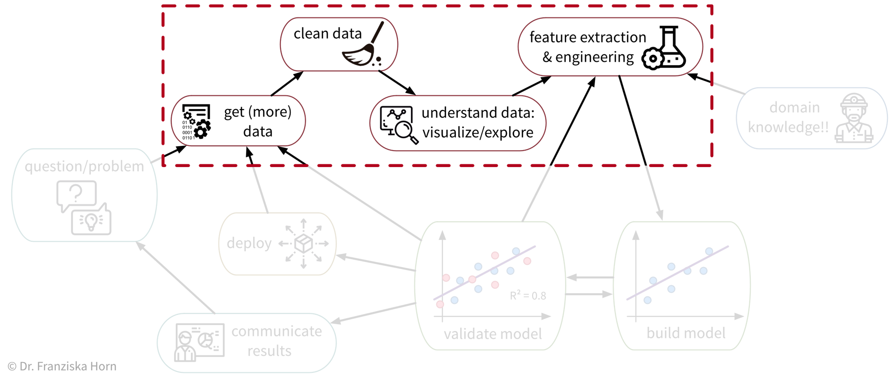
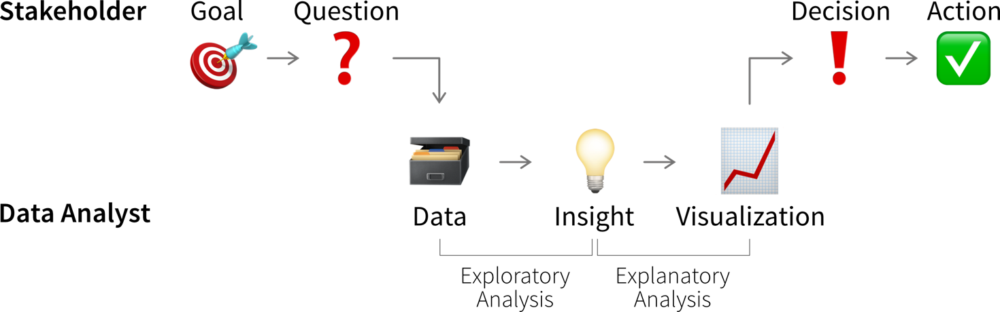
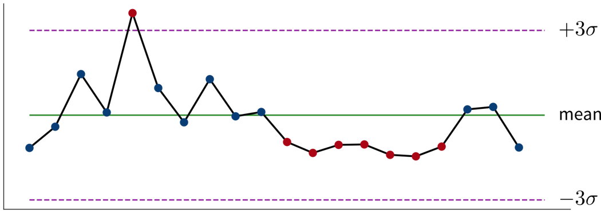

Data Analysis & Preprocessing
As we’ve seen, ML algorithms solve input-output tasks. And to solve an ML problem, we first need to collect data, understand it, and then transform (“preprocess”) it in such a way that ML algorithms can be applied:

Data Analysis
Analyzing data is not only an important step before using this data for a machine learning project, but can also generate valuable insights that result in better (data-driven) decisions. We usually analyze data for one of two reasons:
- We need some specific information to make a (better) decision (reactive analysis, e.g., when something went wrong and we don’t know why).
- We’re curious about the data and don’t know yet what the analysis will bring (proactive analysis, e.g., to better understand the data at the beginning of an ML project).
Data analysis results can be obtained and communicated in different formats
- A custom analysis with results presented, e.g., in a power point presentation
- A standardized report, e.g., in form of a PDF document, showing static data visualizations of historical data
- A dashboard, i.e., a web app showing (near) real-time data, usually with some interactive elements (e.g., options to filter the data)

While the data story that is told in a presentation is usually fixed, users have more opportunities to interpret the data and analyze it for themselves in an interactive dashboard.
What all forms of data analyses have in common is that we’re after “(actionable) insights”.
What is an insight?
Psychologist Gary Klein defines an insight as “an unexpected shift in the way we understand things”.

Arriving at an insight requires two steps:
- Notice something unexpected, e.g., a sudden drop or increase in some metric.
- Understand why this happened, i.e., dig deeper into the data to identify the root cause.
When we understand why something happened, we can often also identify a potential action that could get us back on track, thereby making this an actionable insight.
Knowing which values are unexpected and where it might pay off to dig deeper often requires some domain knowledge, so you might want to examine the results together with a subject matter expert.
Ideally, we should continuously monitor important metrics in dashboards or reports to spot deviations from the norm as quickly as possible, while identifying the root cause often requires a custom analysis.

As a data analyst you are sometimes approached with more specific questions or requests such as “We’re deciding where to launch a new marketing campaign. Can you show me the number of users for all European countries?”. In these cases it can be helpful to ask “why?” to understand where the person noticed something unexpected that prompted this analysis request. If the answer is “Oh, we just have some marketing budget left over and need to spend the money somewhere” then just give them the results. But if the answer is “Our revenue for this quarter was lower than expected” it might be worth exploring other possible root causes for this, as maybe the problem is not the number of users that visit the website, but that many users drop out before they reach the checkout page and the money might be better invested in a usability study to understand why users don’t complete the sale.
Data-driven Decisions
While learning something about the data and its context is often interesting and can feel rewarding by itself, it is not yet valuable. Insights become valuable when they influence a decision and inspire a different course of action, better than the default that would have been taken without the analysis.

This means we need to understand which decision(s) the insights from our data analysis should influence.
Not all decisions need to be made in a data-driven way. But decision makers should be transparent and upfront about whether a decision can be influenced by analysis results, i.e., what data would make them change their mind and choose a different course of action. If data is only requested to support a decision that in reality has already been made, save the analysts the time and effort!
Before we conduct a data analysis we need to be clear on:
- Who are the relevant stakeholders, i.e., who will consume the data analysis results (= our audience / dashboard users)?
- What is their goal?
In business contexts, the users’ goals are usually in some way related to making a profit for the company, i.e., increasing revenue (e.g., by solving a customer problem more effectively than the competition) or reducing costs.
The progress towards these goals is tracked with so called Key Performance Indicators (KPIs), i.e., custom metrics that tell us how well things are going. For example, if we’re working on a web application, one KPI we might want to track could be “user happiness”. Unfortunately, true user happiness is difficult to measure, but we can instead check the number of users returning to our site and how long they stay and then somehow combine these and other measurements into a proxy variable that we then call “user happiness”.
A KPI is only a reliable measure, if it is not simultaneously used to control people’s behavior, as they will otherwise try to game the system (Goodhart’s Law). For example, if our goal is high quality software, counting the number of bugs in our software is not a reliable measure for quality, if we simultaneously reward programmers for every bug they find and fix.
Lagging vs. Leading KPIs
Unfortunately, the things we really care about can often only be measured after the fact, i.e., when it is too late to take corrective action. For example, in sales we care about “realized revenue”, i.e., money in the bank, but if the revenue at the end of the quarter is less than what we hoped for, we can only try to do better next quarter. These metrics are called lagging KPIs.
Leading KPIs instead tell us when we should act before it’s too late. For example, in sales this could be the volume of deals in the sales pipeline, i.e., while not all of these deals might eventually go through and result in realized revenue, if the pipeline is empty we know for certain that we wont reach our revenue goals.
If the causal relationships between variables are too complex to identify leading KPIs directly, we can instead try to use a machine learning model to predict lagging KPIs. For example, in a polymer production process, an important quality metric may be the tensile strength measured 24 hours after the polymer hardens. Waiting for these results could lead to discarding the last 24 hours of production if the quality is subpar. If the relationships between the process parameters (such as production temperature) and the resulting quality are too complex to identify a leading KPI, we could instead train an ML model on the past process parameters (inputs) and corresponding quality measurements (outputs) to then continuously predict the quality during production. When the model predicts that the quality is off-target, the operators can intervene and fix issues before significant production time is wasted.
However, relying on an ML model introduces the need to monitor its predictions for trustworthiness. In our example, the prediction accuracy on new data serves as a lagging KPI, as we only know whether the predictions are correct after real measurements arrive 24 hours later. As a leading KPI, we can measure the discrepancy between process parameter values used in model training and those received in production to identify dataset drifts. These drifts, such as changes in values due to sensor malfunctions, can lead to inaccurate predictions for affected samples.
The first step when making a data-driven decision is to realize that we should act by monitoring our KPIs to see whether we’re on track to achieve our goals.
Ideally, this is achieved by combining these metrics with thresholds for alerts to automatically notify us if things go south and a corrective action becomes necessary. For example, we could establish some alert on the health of a system or machine to notify a technician when maintenance is necessary. To avoid alert fatigue, it is important to reduce false alarms, i.e., configure the alert such that the responsible person tells you “when this threshold is reached, I will drop everything else and go fix the problem” (not “at this point we should probably keep an eye on it”).
Depending on how frequently the value of the KPI changes and how quickly corrective actions show effects, we want to check for the alert condition either every few minutes to alert someone in real time or, for example, every morning, every Monday, or once per month if the values change more slowly.
Is this significant?
Small variations in KPIs are normal and we should not overreact to noise. Statistics can tell us whether the observed deviation from what we expected is significant.
Statistical inference enables us to draw conclusions that reach beyond the data at hand. Often we would like to make a statement about a whole population (e.g., all humans currently living on this earth), but we only have access to a few (hopefully representative) observations to draw our conclusion from. Statistical inference is about changing our mind under uncertainty: We start with a null hypothesis (i.e., what we expected before looking at the data) and then check if what we see in the sample dataset makes this null hypothesis look ridiculous, at which point we reject it and go with our alternative hypothesis instead.
Example: Your company has an online store and wants to roll out a new recommendation system, but you are unsure whether customers will find these recommendations helpful and buy more. Therefore, before going live with the new system, you perform an A/B test, where a percentage of randomly selected users see the new recommendations, while the others are routed to the original version of the online store. The null hypothesis is that the new version is no better than the original. But it turns out that the average sales volume of customers seeing the new recommendations is a lot higher than that of the customers browsing the original site. This difference is so large that in a world where the null hypothesis was true, it would be extremely unlikely that a random sample would give us these results. We therefore reject the null hypothesis and go with the alternative hypothesis, that the new recommendations generate higher sales.
In addition to rigorous statistical tests, there are also some rules of thumb to determine whether changes in the data warrant our attention: If a single sample lies three standard deviations (\(\sigma\)) above or below the mean or seven consecutive points fall above or below the average value, this is cause for further investigation.

Read this article to learn more about the difference between analysts and statisticians and why they should work on distinct splits of your dataset.
For every alert that is created, i.e., every time it is clear that a corrective action is needed, it is worth considering whether this action can be automated and to directly trigger this automated action together with the alert (e.g., if the performance of an ML model drops below a certain threshold, instead of just notifying the data scientist we could automatically trigger a retraining with the most recent data). If this is not possible, e.g., because it is not clear what exactly happened and therefore which action should be taken, we need a deeper analysis.
Digging deeper into the data can help us answer questions such as “Why did we not reach this goal and how can we do better?” (or, in rarer cases, “Why did we exceeded this goal and how can we do it again?”) to decide on the specific action to take.
Don’t just look for data that confirms the story you want to tell and supports the action you wanted to take from the start (i.e., beware of confirmation bias)! Instead be open and actively try to disprove your hypothesis.
Such an exploratory analysis is often a quick and dirty process where we generate lots of plots to better understand the data and where the difference between what we expected and what we saw in the data is coming from, e.g., by examining other correlated variables. However, arriving at satisfactory answers is often more art than science.
When using an ML model to predict a KPI, we can interpret this model and its predictions to better understand which variables might influence the KPI. Focusing on the features deemed important by the ML model can be helpful if our dataset contains hundreds of variables and we don’t have time to look at all of them in detail. But use with caution – the model only learned from correlations in the data; these do not necessarily represent true causal relationships between the variables.
Communicating Insights
The plots that were created during an exploratory analysis should not be the plots we show our audience when we’re trying to communicate our findings. Since our audience is far less familiar with the data than us and probably also not interested / doesn’t have the time to dive deeper into the data, we need to make the results more accessible, a process often called explanatory analysis.
Don’t “just show all the data” and hope that your audience will make something of it – this is the downfall of many dashboards. It is essential, that you understand what goal your audience is trying to achieve and what questions they need answers to.
Step 1: Choose the right plot type
- Get inspired by visualization libraries (e.g., here or here), but avoid the urge to create fancy graphics; sticking with common visualizations makes it easier for the audience to correctly decode the presented information
- Don’t use 3D effects!
- Avoid pie or donut charts (angles are hard to interpret)
- Use line plots for time series data
- Use horizontal instead of vertical bar charts for audiences that read left to right
- Start the y-axis at 0 for area & bar charts
- Consider using small multiples or sparklines instead of cramming too much into a single chart

Step 2: Cut clutter / maximize data-to-ink ratio
- Remove border
- Remove gridlines
- Remove data markers
- Clean up axis labels
- Label data directly

Step 3: Focus attention
- Start with gray, i.e., push everything in the background
- Use pre-attentive attributes like color strategically to highlight what’s most important
- Use data labels sparingly

Step 4: Make data accessible
- Add context: Which values are good (goal state), which are bad (alert threshold)? Should the value be compared to another variable (e.g., actual vs. forecast)?
- Leverage consistent colors when information is spread across multiple plots (e.g., data from a certain country is always drawn in the same color)
- Annotate the plot with text explaining the main takeaways (if this is not possible, e.g., in dashboards where the data keeps changing, the title can instead include the question that the plot should answer, e.g., “Does our revenue follow the projections?”)

Further reading
- Show Me the Numbers: Designing Tables and Graphs to Enlighten by Stephen Few
- Better Data Visualizations: A Guide for Scholars, Researchers, and Wonks by Jonathan Schwabish
- Effective Data Storytelling: How to drive change with data, narrative, and visuals by Brent Dykes
- Storytelling with Data: A data visualization guide for business professionals by Cole Nussbaum Knaflic
- Data Visualization: A successful design process by Andy Kirk
- Various blog posts by Cassie Kozyrkov
Garbage in, Garbage out!
Remember: data is our raw material when producing something valuable with ML. If the quality or quantity of the data is insufficient, we are facing a “garbage in, garbage out” scenario and no matter what kind of fancy ML algorithm we try, we wont get a satisfactory result. In fact, the fancier the algorithm (e.g., deep learning), the more data we need.
Below you find a summary of some common risks associated with data that can make it complicated or even impossible to apply ML:
Raw data can be very messy:
- Relevant data is spread across multiple databases / excel sheets that need to be joined. Worst case: Data points don’t have a unique ID based on which the different entries can be linked. Instead one has to fall back on some error prone strategy like matching data based on time stamps.
- Manually entered values contains errors, e.g., misplaced decimal points.
- It is not possible to correct missing values. Worst case: Missing values are not random. For example, sensors fail only right before something goes wrong during the production process. Or in surveys, rich people more often decline to answer questions regarding their income compared to poor or middle class people. This introduces a systematic bias in the dataset.
- The dataset consists of different data types (structured and/or unstructured) with different scales.
- The process setup changes over time, e.g., due to some external conditions like replacing a sensor or some other maintenance event, which means the data collected from different time periods are incompatible. Worst case: These external changes were not recorded anywhere and we only notice at the end of the analysis that the data we were working with violated our assumptions.
→ Data preprocessing takes a very long time.
→ Resulting dataset (after cleaning) is a lot smaller than expected – possibly too small to do any meaningful analysis.
⇒ Before wanting to do ML, first think about how your data collection pipeline & infrastructure could be improved!
Not enough / not the right data to do ML:
Small dataset and/or too little variation, e.g., we produced only a few defective products or a process runs in a steady state most of the time, i.e., there is little or no variation in the inputs.
→ Effect of different input variables on the target can’t be estimated reliably from only a few observations.
⇒ Do some experiments where you systematically vary different inputs to collect a more diverse dataset.Data is inconsistent / incomplete, i.e., same inputs with different outputs, e.g., two products were produced under the same (measured) conditions, one is fine, the other is faulty.
This can have two reasons:- The labels are very noisy, for example, because the human annotators didn’t follow the same set of clear rules or some examples were ambiguous, e.g., one QA-expert deems a product with a small scratch as still OK, while another labels it as defective.
⇒ Clean up the data by relabeling, which can take some time but will pay off! See also this great MLOps / data-centric AI talk by Andrew Ng on how a small high-quality dataset can be more valuable than a larger noisy dataset. - Relevant input features are missing: While it is relatively easy for humans to assess if all the relevant information is present in unstructured data (e.g., images: either we see a cat or we don’t), structured data often has too many different variables and complex interactions to know right away whether all the relevant features were included.
⇒ Talk to a subject matter expert about which additional input features might be helpful and include these in the dataset. Worst case: Need to install a new sensor in the machine and collect this data, i.e., all the data collected in the past is basically useless. BUT: using the right sensor can simplify the problem immensely and installing it will be worth it!
- The labels are very noisy, for example, because the human annotators didn’t follow the same set of clear rules or some examples were ambiguous, e.g., one QA-expert deems a product with a small scratch as still OK, while another labels it as defective.
In many applications, our first instinct is to use a camera to generate the input data, since we humans rely primarily on our visual system to solve many tasks. However, even though image recognition algorithms have come a long way, using such a setup instead of a more specialized sensor can make the solution more error prone.
Trying to detect mushy strawberries? Use a near infrared (NIR) sensor instead of a regular camera like Amazon Fresh did. They still use machine learning to analyze the resulting data, but in the NIR images the rotting parts of fruits are more easily visible than in normal photos.
Trying to detect if a door is closed? With a simple magnet and detector, this task can be solved without any complex analysis or training data! (You probably know the saying: “When you have a hammer, everything looks like a nail”. → Don’t forget to also consider solutions outside your ML toolbox! ;-))
→ Unless the dataset is amended accordingly, any ML model has a poor performance!
If you can, observe how the data is collected. As in: actually physically stand there and watch how someone enters the values in some program or how the machine operates as the sensors measure something. You will probably notice some things that can be optimized in the data collection process directly, which will save you lots of preprocessing work in the future.
Best Practice: Data Catalog
To make datasets more accessible, especially in larger organizations, they should be documented. For example, in structured datasets, there should be information available on each variable like:
- Name of the variable
- Description
- Units
- Data type (e.g., numerical or categorical values)
- Date of first measurement (e.g., in case a sensor was installed later than the others)
- Normal/expected range of values (→ “If this variable is below this threshold, then the machine is off and the data points can be ignored.”)
- How missing values are recorded, i.e., whether they are recorded as missing values or substituted with some unrealistic value instead, which can happen since some sensors are not able to send a signal for “Not a Number” (NaN) directly or the database does not allow for the field to be empty.
- Notes on anything else you should be aware of, e.g., a sensor malfunctioning during a certain period of time or some other glitch that resulted in incorrect data. This can otherwise be difficult to spot, for example, if someone instead manually entered or copy & pasted values from somewhere, which look normal at first glance.
You can find further recommendations on what is particularly important when documenting datasets for machine learning applications in the Data Cards Playbook.
In addition to documenting datasets as a whole, it is also helpful to store metadata for individual samples. For example, for image data, this could include the time stamp of when the image was taken, the geolocation (or if the camera is built into a manufacturing machine then the ID of this machine), information about the camera settings, etc.. This can greatly help when analyzing model prediction errors, as it might turn out that, for example, images taken with a particular camera setting are especially difficult to classify, which in turn gives us some hints on how to improve the data collection process.
Data as an Asset
With the right processes (e.g., roles such as “Data Owner” and “Data Controller” that are accountable for the data quality, and a consistent data infrastructure that includes a monitoring pipeline to validate new data), it is possible for an organization to get from “garbage in, garbage out” to “data is the new oil”:

With (big) data comes great responsibility!
Some data might not seem very valuable to you, but can be a huge asset for others, i.e., with a different use case!

Data Preprocessing
Now that we better understand our data and verified that it is (hopefully) of good quality, we can get it ready for our machine learning algorithms.
Raw Data can come in many different forms, e.g., sensor measurements, pixel values, text (e.g., HTML page), SAP database, …
→ n data points, stored as rows in an excel sheet, as individual files, etc.
What constitutes one data point? It’s always important to be really clear about what one data point actually is, i.e., what the inputs look like and what we want back as a result from the model for each sample / observation. Think of this in terms of how you plan to integrate the ML model with the rest of your workflow: what data is generated in the previous step and can be used as input for the ML part, and what is needed as an output for the following step?
Preprocessing
transforming and enriching the raw data before applying ML, for example:
- remove / correct missing or wrongly entered data (e.g., misplaced decimal point)
- exclude zero variance features (i.e., variables with always the same value) and nonsensical variables (e.g., IDs)
- feature extraction: transform into numerical values (e.g., unstructured data like text)
- feature engineering: compute additional/better features from the original variables
⇒ Feature matrix \(\,X \in \mathbb{R}^{n\times d}\): n data points; each represented as a d-dimensional vector (i.e., with d features)
Prediction Targets?
→ Label vector \(\,\mathbf{y}\) : n-dimensional vector with one target value per data point